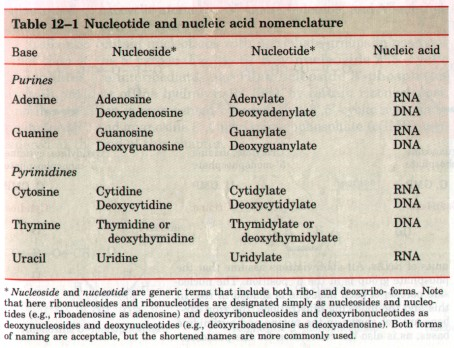
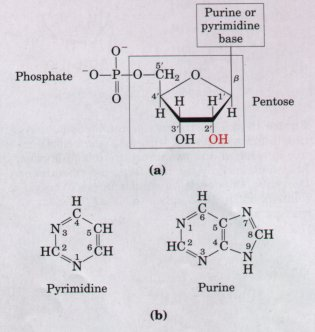
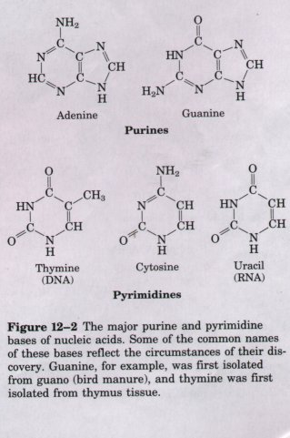
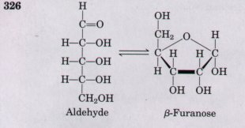
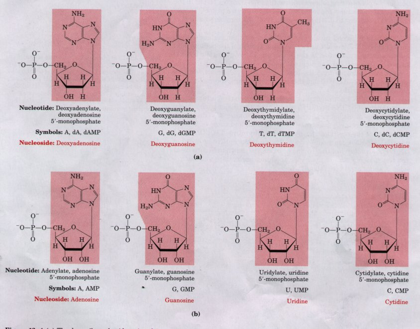
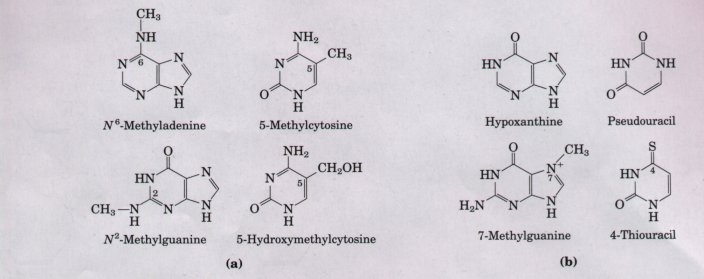
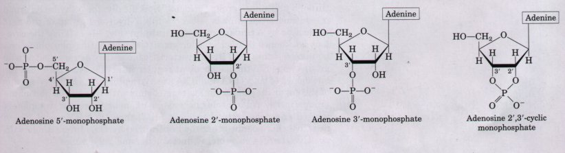

The final classes of biomolecules to be considered, the nucleotides and molecules derived from them, represent a clear case in which last is not least. Nucleotides themselves participate in a plethora of crucial supporting roles in cell metabolism, and polymers of nucleotides, the nucleic acids, provide the script for everything that occurs in a cell.
Nucleotides are energy-rich compounds that drive metabolic processes (primarily biosyntheses) in all cells. They also serve as chemical signals, key links in cellular systems that respond to hormones and other extracellular stimuli, and are structural components of a number of enzyme cofactors and metabolic intermediates.
The nucleic acids, deoxyribonucleic acid (DNA) and ribonucleic acid (RNA), are the molecular repositories for genetic information. The structure of every protein, and ultimately of every cell constituent, is a product of information programmed into the nucleotide sequence of a cell's nucleic acids.
This chapter provides an overview of the nucleotides and nucleic acids found in most cells. The metabolism of nucleotides is discussed in Chapter 21, and a more detailed examination of the function of nucleic acids is the focus of Part IV of this text.
The amino acid sequence of every protein and the nucleotide sequence of every RNA molecule in a cell are specified by that cell's DNA. The necessary protein or RNA sequence information is found in corresponding nucleotide sequences in the DNA. A segment of DNA that contains the information required for the synthesis of a functional biological product (protein or RNA) is referred to as a gene. A cell typically has many thousands of genes, and DNA molecules, not surprisingly, tend to be very large. The storage of biological information is the only known function of DNA.
Several classes of RNAs are found in cells, each with a distinct function. Ribosomal RNAs (rRNA) are structural components of ribosomes, the large complexes that carry out the synthesis of proteins. Messenger RNAs (mRNA) are nucleic acids that carry the information from one or a few genes to the ribosome, where the corresponding proteins can be synthesized. Transfer RNAs (tRNA) are adapter molecules that faithfully translate the information in mRNA into a specific sequence of amino acids. In addition to these major classes there are a wide variety of special-function RNAs, described in depth in Part IV. We introduce here the chemical structures of nucleotides and nucleic acids.
| Nucleotides have three characteristic
components: (1) a nitrogenous base, (2) a pentose, and
(3) a phosphate (Fig. 12-la). The nitrogenous bases are
derivatives of two parent compounds, pyrimidine and
purine (Fig. 12-lb). The bases and pentoses found in the
common nucleotides are heterocyclic compounds. The carbon
and nitrogen atoms in the parent structures are
conventionally numbered to facilitate naming and
identification of the many derivative compounds. The
convention for the pentose ring follows rules outlined in
Chapter 11, but in the pentoses of nucleotides the carbon
numbers are given a prime (' ) designation (Fig. 12-la)
to distinguish them from the numbered atoms of the
nitrogenous bases. The base is joined covalently (at N-1 of pyrimidines and N-9 of purines) in an N-glycosidic linkage to the 1' carbon of the pentose, and the phosphate is esterified to the 5' carbon. The N-glycosidic bond is formed by removal of the elements of water (a hydroxyl group from the pentose and hydrogen from the base), as in O-glycosidic bond formation (see Fig. 11-11). Without the phosphate group, the molecule is called a nucleoside. DNA and RNA both contain two major purine bases, adenine (A) and guanine (G). DNA and RNA also contain two major pyrimidines; in both types of nucleic acid one of these is eytosine (C). The single important difference between the bases of DNA and those of RNA is the nature of the second major pyrimidine: thymine (T) in DNA and uracil (U) in RNA. Only rarely does thymine occur in RNA or uracil in DNA. The structures of the five major bases are shown in Figure 12-2, and the nomenclature of their corresponding nucleotides and nucleosides is summarized in Table 12-l.  |
 Figure 12-1 (a) The general structure of nucleotides, showing the numbering convention for the pentose. The structure shown is that of a ribonucleotide. In deoxyribonucleotides the -OH group on the 2' carbon (in red) is replaced with -H. (b) The parent compounds of the pyrimidine and purine bases of nucleotides and nucleic acids, showing the numbering conventions for the ring structures .  |
| Two kinds of pentoses are found in
nucleic acids. The recurring deoxyribonucleotide units of
DNA contain 2'-deoxy-n-ribose, and the ribonucleotide
units of RNA contain n-ribose. In nucleotides, both types
of pentoses are in their β-furanose (closed five-member
ring) form (Fig. 12-3). Figure 12-4 gives the structures and names of the four major deoxyribonucleotides (deoxyribonucleoside 5'-monophosphates), the structural units of DNAs, and the four major ribonucleotides (ribonucleoside 5'-monophosphates), the structural units of RNAs. Specific long sequences of A, T, G, and C nucleotides in DNA encode the genetic information. Although nucleotides bearing one of these major bases are most common, both DNA and RNA also contain some minor bases (Fig. 12-5). In DNA the most common of these are metnyatea Iorms oI the major bases, but in some viral DNAs certain bases may be hydroxymethylated or glucosylated. Such altered or unusual bases in DNA molecules are in many cases specific signals for regulating or protecting the genetic information. Minor bases of many types are also found in RNAs, especially in tRNA. |
 Figure 12-3 The straight-chain (aldehyde) and ring (β-furanose) forms of ribose. When ribose is free in solution, the two forms are in equilibrium. RNA contains only the ring form, β-n-ribofuranose. Deoxyribose undergoes a similar interconversion in solution, but in DNA exists solely as β-2'-deoxy-nribofuranose. |

Figure 12-4 (a) The deoxyribonucleotide units of DNA in free form at pH 7.0. In DNA they are usually symbolized as A, G, T, and C, and sometimes as dA, dG, dT, and dC. In their free form these nucleotides are commonly abbreviated dAMP, dGMP, dTMP, and dCMP. (b) The ribonucleotide units of RNAs. All abbreviations assume that the phosphate group is at the 5' position. The nucleoside portion of each molecule is shaded in red. In this and the following illustrations, the ring carbons are not shown in the purine and pyrimidine bases, as is also the convention for the pentoses.

Figure 12-5 Some minor purine and pyrimidine bases. (a) Minor bases found in DNA. 5-Methylcytosine occurs in the DNA of animals and higher plants, N6-methyladenine in bacterial DNA, and 5-hydroxymethylcytosine in bacteria infected with certain bacteriophages. (b) Some minor bases of tRNAs. Note that pseudouracil is identical to uracil; the distinction is the point of attachment to the ribose-uracil is attached through N-1, the normal attachment point for pyrimidines, and pseudouracil is attached through C-5.
The nomenclature used for the minor bases can be confusing. As indicated in Figures 12-4 and 12-5, many of the minor bases (such as hypoxanthine) have common names, just as the major bases do. For substituted forms of these bases, when the substitution involves an atom in the purine or pyrimidine rings, the usual convention (used here) is simply to indicate the ring position of the substitution by its number (e.g., 5-methylcytosine, 7-methylguanine, and 5-hydroxymethylcytosine in Fig. 12-5). The type of atom to which the substituent is attached (N, C, O, etc.) is not identified. The convention changes when the substituted atom is exocyclic, in which case the type of atom is identified and the ring position to which it is attached is denoted with a superscript. The amino nitrogen attached to C-6 in adenine becomes N6; similarly, the carbonyl oxygen and the amino group at C-6 and C-2 of guanine become O6 and N2, respectively. Examples of bases substituted on exocyclic atoms are N6-methyladenine, and N2-methylguanine, as shown in Figure 12-5.
Cells also contain nucleotides with phosphate groups in positions other than on the 5' carbon (Fig. 12-6). Ribonucleoside 2',3'-cyclic phosphates are intermediates and ribonucleoside 3'-phosphates are end products of the hydrolysis of RNA by certain ribonucleases. Another variation is represented by adenosine 3',5'-cyclic monophosphate (cAMP) and guanosine 3',5'-cyclic monophosphate (cGMP), considered at the end of this chapter.

Figure 12-6 Some adenosine monophosphates. Adenosine 2'-monophosphate, 3'-monophosphate, and 2',3'-cyclic monophosphate are intermediates in the alkaline hydrolysis of RNA.